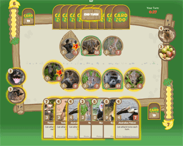
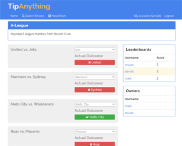
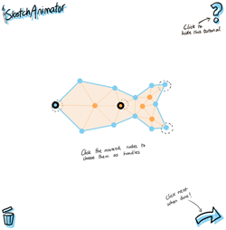
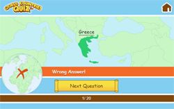

I am a lifelong programming who started playing around with HTML and CSS when I was 11 and before long I discovered PHP and then happened upon my first love, Flash. Since then the technologies may have changed but my passion for creating interactive web applications, tools and games hasn't. The thing that keeps me excited about web development is that there are always hundreds of new things to learn and new technologies to play with!
In my undergraduate years I studied Computer Science and Mathematics at the University of Melbourne. Following on from that I moved on to study a Masters in Mathematics. After considering for a long time moving on to do a PhD and pursue a career in academia, I ultimately could not get past the fact that what I love more than anything is building things, and it is for that reason I am starting my career as a developer.
 Card Zoo is a multiplayer online card game in the vain of Hearthstone. This project originally started as an exercise in recreating the Hearthstone interface in Javascript, but headed in a different direction once I realised it was a good opportunity to learn Meteor. Meteor allows you to use Javascript for the front and back end, and in fact the same code on client and server, so the entire project is written in Javascript! Features include:
 TipAnything is a responsive single-page application for setting up tipping leagues amongst small groups of people. I wanted to build a solution that would make it easy for anyone to set up a league to make tips on the outcome of just about anything they wanted. The front-end is built in Angular and the back-end is a RESTful PHP API.
A JavaScript experiment attempting to boil down the experience of playing a modern game to its essence. Fully responsive design including a custom reponsive pagination system. Extensive use of Javascript events to detect achievement-worthy actions. Takes advantage of Gulp for building the site which allows the Javascript to be splintered and easier to work with but compiled into a single file to optimise page load times.
 A tool to pose and animate a 2d sketch. This was initially an implementation of the As-Rigid-As-Possible Shape Manipulation algorithm for the Coursera course Interactive Computer Graphics, but I tried to build a user-friendly UI and incorporate the ability to animate your sketches. Unfortunately, the A.R.A.P. algorithm involves a lot of computation which hammers a lot of Javascript engines so the tool may not run smoothly (particularly on mobile). If this is the case for you try to run in it Chrome which tends to have the best performing Javascript engine.
 A mobile webapp capable quiz app testing knowledge of countries. Keeps track of your record for each country using HTML5 localstorage and lets you 'Swot Up' on the countries you have been struggling with. Uses the fantastic jQuery Autocomplete to suggest country names. Uses d3.js for globe visualisation and lettering.js for text animations.
An interactive viewer for some of the Tweetable Mathematical Art posted in the thread in the StackExchange Code Golf community. This was an interesting project to learn about Web Workers
Inspired by an interesting quiz question that was surprisingly tricky, I decided to make this simple app to test out how difficult these types of questions are to answer in general. It was a good opportunity to learn the Google Maps API. Try it out and see what you think!
A project that aims to replicate the experience of browsing books at a physical library. After an initial search users explore the virtual bookshelf by choosing a subject of a book they like to bring up similar books. The project is fully responsive and works great on tablets/phones where the device can be physically turned to read titles on the spines.
Demos are smaller projects that are more experimental and do not have as much polish. They may use new features unavailable in older browsers or not scale on small screens, for instance.
A recreation of the Game of Life in WebGL/canvas. By using a WebGL shader each update step can be computed on the GPU in parallel which allows the simulation to run blazingly fast despite simulating 1 pixel by 1 pixel cells. Since it is hard to see detail at this scale, a zoom tool (top left) can be used to zoom in for a better view. An interface is provided using dat.GUI to manipulate various simulation parameters.
An implementation of the Marching Squares algorithm for computing the fixed-value contour of a 2d field. The algorithm works well when an approximation of the contour will do, since the spacing between grid lines can be controlled which controls the computational intensity. Unfortunately the algorithm does not work well for very small elements since a small spacing is needed, so I did not use this implementation for my water droplets simulation but it is a nice thing to play with in and of itself.
This demo came out of creating the 'Weaving' effect that you can view by selecting from the drop down menu in the top-right interface. After creating this effect and subsequently having a lot of fun playing around with parameters to see what happened I decided to add more options and give it a more user-friendly interface. Look at some of the presets or (much more fun) play around with the sliders and see what happens!
This is a demonstration of mood diffusion. Every pixel in the simulation represents an agent with a mood/happiness value which is indicated by a color between red (miserable) and green (ecstatic). (Forgive the garish colour scheme, but it makes sense given the narrative). The simulation parameters determine how the mood of each agent affects it's neighbours. The simulation is implemented using WebGL shaders for computational efficiency.
This demo started from a simple 2d wave simulation but the interesting challenge was to get the water droplets to naturally merge and split as you would expect. Having already concluded that the marching squares method was not suitable I incorporated a WebGL shader to quickly and efficiently compute the metablob shapes as the water droplets fall.
You may be interested to look at my Masters thesis, "Polynomial Methods in Combinatorial Geometry".